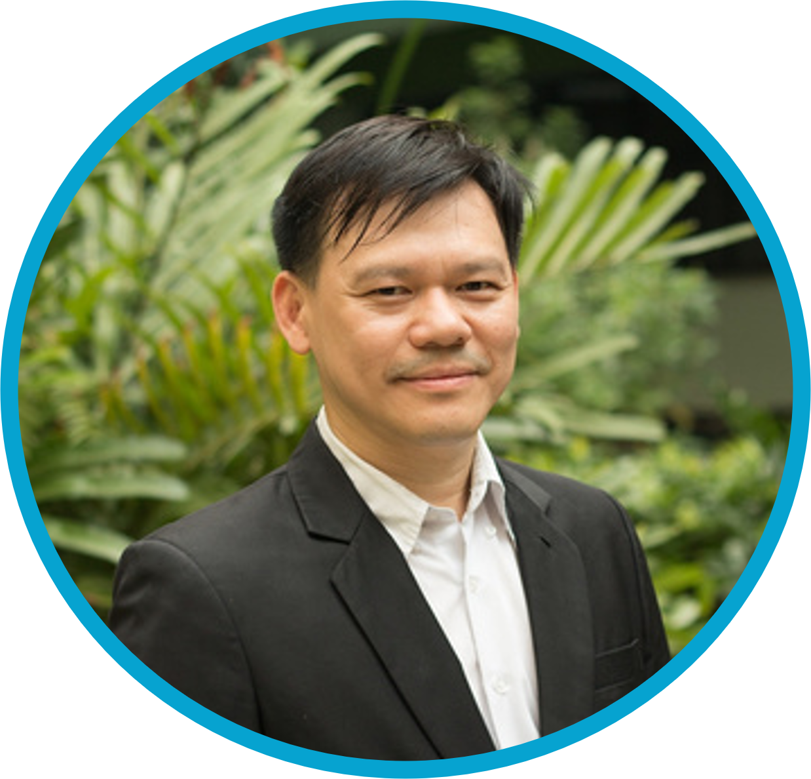
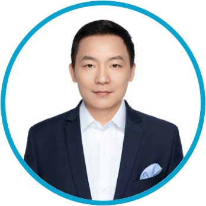

A team of pharmaceutical scientists, computational researchers, and industry experts united by one mission — to accelerate drug discovery through integrated AI.
AI Longevity was founded by a team uniting active pharmaceutical research with international business expertise.

Pharmaceutical chemist specializing in medicinal chemistry, natural product drug discovery, and nanoformulation. He directs the Center of Excellence in Natural Products for Ageing and Chronic Diseases (CE-NPACD) and has authored extensive research on curcumin formulation, prodrug design, and AI-assisted drug screening.
Pharmaceutical chemist and registered pharmacist with expertise in analytical chemistry, natural product analysis, and prodrug development. His research focuses on the analytical methods and quality control frameworks that underpin pharmaceutical innovation.

Pharmaceutical entrepreneur with over a decade of international business experience across sub-Saharan Africa. He led the growth of Tridem Pharma Ghana (formerly Guilin Pharma Ghana) to multi-million-dollar revenue, and managed Fosun Pharma Group subsidiary operations across Ghana, Côte d'Ivoire, Uganda, and Nigeria.
Operating leaders responsible for AI Longevity's research, business development, and strategic partnerships.
Interested in working at the intersection of AI and pharmaceutical science? We'd love to hear from you.
Get in touch →